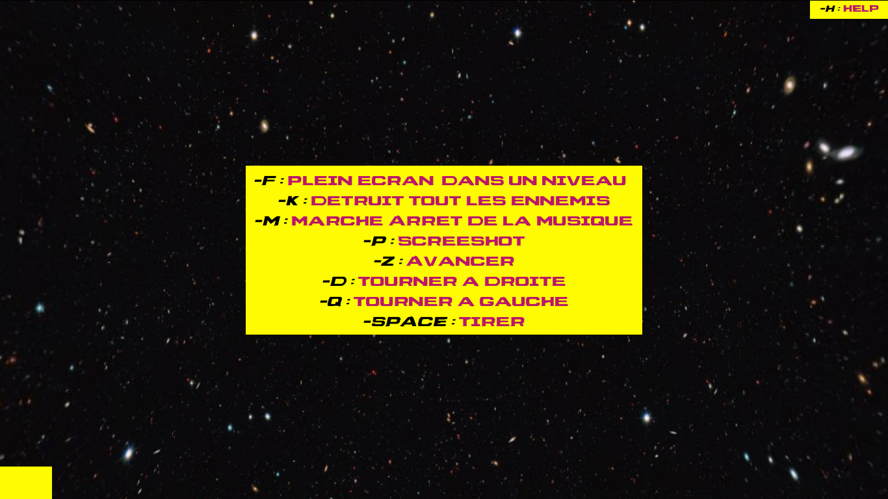
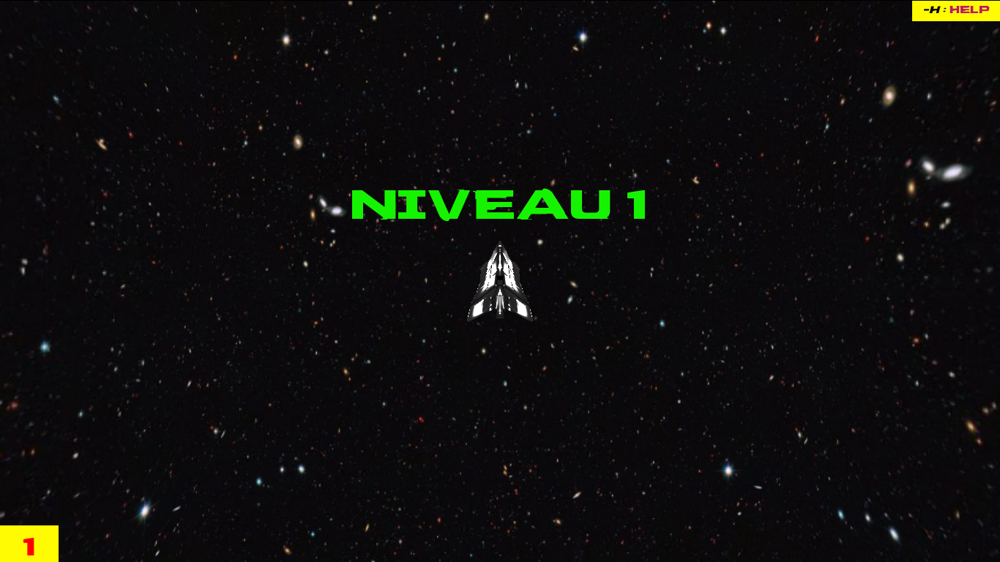
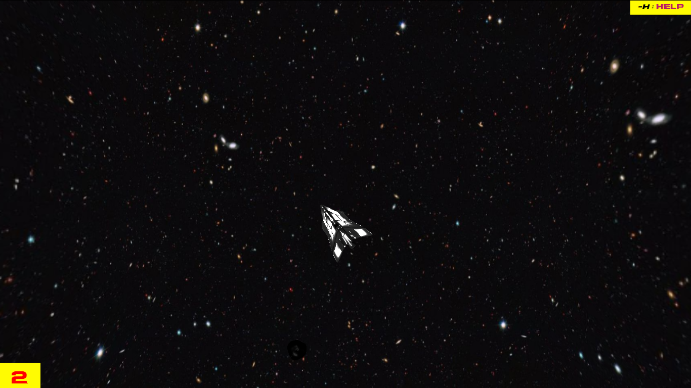
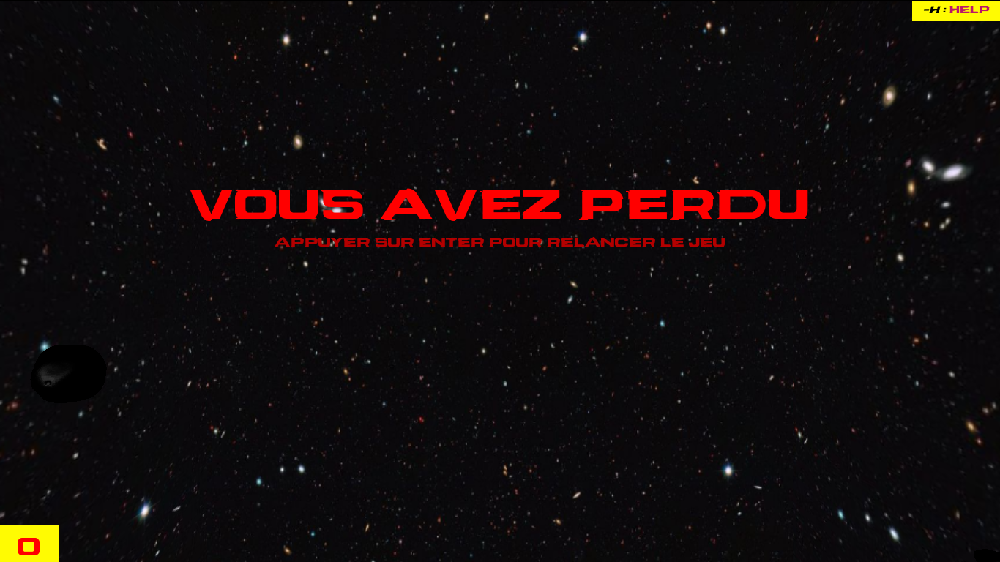

Compte rendu SIA Space Invader
Deroulement du jeu
Un écran d'accueil affiche le nom du jeu et les touches associées aux actions disponibles.
Il est possible de voir les touches en utilisant la touche H qui est indiqué en haut a droite de l'écran.

Le joueur gagne le niveau courant quand son vaisseau a réussi à détruire entièrement les astéroides prévues pour ce niveau en tirant dessus.
Le jeu commencer au niveau 1 et si tous les asteroides sont détruit celui-ci change pour passer au niveau 2 et ainsi dessuite.

La partie proprement dite continue en passant les niveaux tant que les 3 vies n'ont pas été perdues.
En bas a droite est indiquer le nombre de bouclier de vie restant, si il y a colision alors qu'il n'y a plus de bouclier, la partie est perdu.

La fin de partie affiche "Game Over" et le score. Un événement (souris ou clavier) permet de revenir à la page d'accueil.
Lorsque que la partie est perdu, il faut presser Enter pour recommancer le jeu.

Technologies logicielles
Le jeu devra tourner dans un navigateur Web et sera constitué de primitives graphiques 3D animées.
Pour cela j'ai utilisé différents objets de type "dae" que se soit pour les vaisseau ou les asteroides
La principale contrainte logicielle est de s'appuyer sur la bibliothèque Three.js.
J'ai utilisé principalement three.js pour la creation/gestion de la scene et des objets
Vous pouvez utiliser autant de bibliothèques auxiliaires que vous le souhaiterez du moment qu'une courte justification en soit faite dans le rapport.
J'ai utilisé principalement diférentes bibliothéques comme :
- ColladaLoader.js
- OrbitControls.js
- keydrown.js
ColladaLoader.js : pour pouvoir charger des objet (type dae par exemple)
OrbitControls.js : pour la gestion mouvements
keydrown.js : pour la gestion des touches du clavier
Fenêtre graphique 3D
- Adaptation dynamique de la taille de la fenêtre = OUI
- Passage en plein écran (touche 'f' comme "fullscreen") = OUI
- Capture d'écran (touche 'p' comme "print") = OUI
Architecture logicielle
- Respect architecture logicielle = OUI
Graphisme
- Les entités du jeu doivent avoir un aspect 3D. = OUI
- Les vaisseaux et astéroïdes doivent être animés (puissance de la fusée, rotation de l'astéroide, explosions, ...).= >NON
- Prévoir un décors 3D derrière les entités (pas un simple fond noir).= OUI
- Soignez l'aspect des entités en leurs attribuant divers matériaux et textures.= OUI
- Inclure au moins un effet de post-processing (désactivable) parmi ceux proposés par Three.js.= NON
Dialogues avec l'utilisateur
- Message lors de la transition d'un niveau à l'autre = OUI
- Affichage par la touche 'h' du récapitulatif des raccourcis clavier disponibles = OUI
Points de vue caméra
- une fixe par rapport au plateau, = OUI
- une deuxième mobile attachée au vaisseau du joueur principal (touche '1'). = NON
Gestion des collisions
- Les missiles disparaissent quand ils ont touché un astéroïde. = OUI
- Le vaisseau explose s'il est touché par un astéroïde ou un missile de vaisseau ennemi. = OUI
- astéroïdes touchés éclatent en plusieurs morceaux ayant des trajectoires réalistes. = OUI
Dynamique
- Les astéroïdes suivent des trajectoires linéaires aléatoires = OUI
- Le vaisseau est créé au centre du plateau. Il peut tourner, avancer ou freiner avec les touches.= OUI
- Le vaisseau tire des missiles avec la barre d'espace. Ces missiles perdent leur capacité de détruire au delà d'une certaine distance.= OUI
- Le plateau de jeu est périodique : un objet passant par un bord réapparait au bord opposé.= OUI
Bolzonella Guillaume